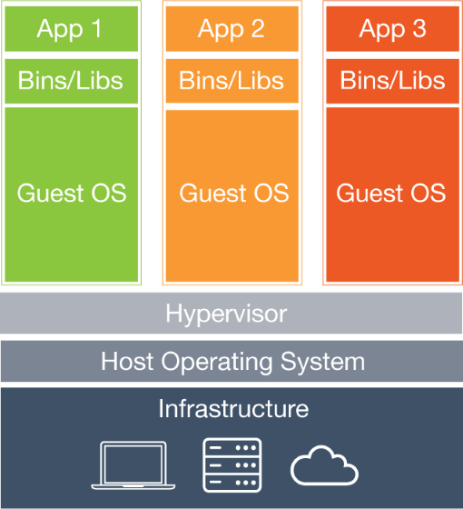

docker
introduction
by Alex Ellis
What is docker?

Platform for virtualization.
OpenContainer Initiative
Amazon, Apcera, Cisco, CoreOS, Docker, EMC, Fujitsu Limited, Goldman Sachs, Google, HP, Huawei, IBM, Intel, Joyent, Linux Foundation, Mesosphere, Microsoft, Pivotal, Rancher Labs, Red Hat and VMware
Containerization
- Package app and dependencies into single unit
- Same on any environment
- Cross-platform
- Lightweight
what is a container?

..it's not a vm..
..vms look like

containers look like..

getting docker
- docker toolbox
- docker machine
- docker client
- docker engine
- docker-compose
docker is a toolchain
What runs on Linux?
Coding
| SQL | Postgres, MySQL, sqlite |
| NoSQL | mongo, redis, memcachd |
| source | git/svn/tfs |
| CI | travis, Jenkins |
| languages | .NET, Node.JS, Python, Perl, Ruby, PHP, Java |
Network admin
| services | nginx, apache, squid proxy |
| timers/job control | cron, systemd |
| remote admin | ssh* |
Home network
| cloud | owncloud, gitlab |
| NAS | samba, ftp, sftp, tar/gz |
| Media | AirPlay server, Plex |
| dev environment | mongodb, node.js/express, ruby on rails |
Maintenance

key commands
| command | result |
|---|---|
docker images -q --filter "dangling=true"|xargs docker rmi -f |
purge untagged images |
docker ps -aq | xargs docker rm |
purge stopped containers |
key bash/*NIX commands
| command | result |
|---|---|
df -h / |
disk space |
free -h |
memory usage |
tr "\n" " " |
translate new lines to spaces |